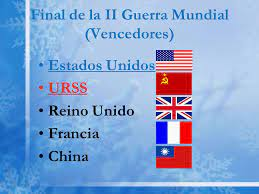

inicio de la segunda guerra mundial
1 de septiembre de 1939 Alemania invadió Polonia el 1 de septiembre de 1939 y así dio inicio a la Segunda Guerra Mundial.

1 de septiembre de 1939 Alemania invadió Polonia el 1 de septiembre de 1939 y así dio inicio a la Segunda Guerra Mundial.
Como consecuencia de la Segunda Guerra Mundial murieron 55 millones de personas en todo el mundo. Fue el conflicto más grande y destructivo de toda la historia. Alemania invadió Polonia el 1 de septiembre de 1939 y así dio inicio a la Segunda Guerra Mundial. Como respuesta, Gran Bretaña y Francia le declararon la guerra a Alemania. Las fuerzas alemanas invadieron Europa occidental en la primavera de 1940. Alentada por los alemanes, la Unión Soviética ocupó los estados bálticos en junio de 1940. Italia, miembro del Eje (países aliados con Alemania), se sumó a la guerra el 10 de junio de 1940. Del 10 de julio al 31 de octubre de 1940, los nazis libraron, y finalmente perdieron, una batalla aérea contra Inglaterra, conocida como la Batalla de Gran Bretaña.

El bando que resultó ganador en la Segunda Guerra Mundial fue el de los Aliados, siendo los países que luchaban contra el nazismo de Hitler. Entre los principales países que formaron parte de los Aliados podemos hablar de Reino Unido, Francia, Estados Unidos, la URSS, Nueva Zelanda, Australia o el Raj Británico.
